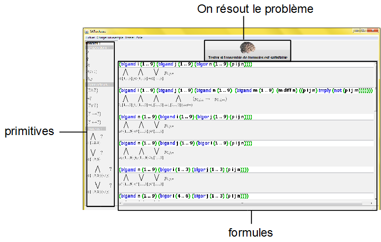

SAToulouse
This software enables to test if a set of formulas of Classical Boolean logic is satisfiable.
Ce logiciel permet de tester si un ensemble de formules de la logique propositionnelle classique est satisfiable.
Description of the user interface

What is the syntax of the formulas in SAToulouse ?
The syntax of formulas in SAToulouse looks like the s-expressions of the language Scheme. Here is the formal grammar:
<phi>,
<psi> ::= <atomicproposition> | (not <phi>) |
(<phi> or <psi>) | (<phi> and <psi>) | (bigand
<var> <set> <phi>) | (bigor <var> <phi>)
| (bigand <var> <set> <booleanexpression> <phi>) | (bigor <var> <set> <booleanexpression> <phi>)
<booleanexpression> ::= (<expression> diff <expression>)
<expression> ::= <var> | <number> | (<expression> + <expression>)
<var> ::= any symbols (example: i, j, a)
<set> ::= (<expression> .. <expression>) | (<expression> <expression> <expression>........)
<number> ::= 0, 1, 2, 3 etc.
<atomicproposition> ::= any symbols | (symbol <expression> <expression>.........)
Examples of well-formed formulas:
p
(p and q)
(p and (not q))
(not p)
(not (p or (not q)))
(bigand i (1 2 3) (p i))
(bigand i (1 .. 12) (p i))
(bigand i (1 2 3) ((p i) or (q i)))
(bigand i (1 .. 12) (bigor j (1 .. 10) (i diff j) ((p i) or (q j))))
Strings that are NOT well-formed formulas:
p and q
and p q
(and p q)
etc.
(p and not q)
How does SAToulouse technically work?
SAToulouse is a graphical user interface written in JAVA.
The SAT solver we use is SAT4J.
The transformation of macros (bigand, bigor etc.) is written in Scheme
and we use Kawa. In order to display LaTEX formulas, we use JLatexMath.
How to use SAToulouse in command line?
In order to launch the interface, write:
java -jar satoulouse.jar
If you want to check whether a set of formulas is satisfiable or not, write:
java -jar satoulouse.jar formula1 formula2 formula3 ...
It will not launch the graphical user interface but it gives you an answer in textual form in the console.
Example:
java -jar satoulouse.jar "(p and (not p))"
java -jar satoulouse.jar "p" "(p imply q)"
If you want to check whether a set of formulas contained in a file is satisfiable or not, write:
java -jar satoulouse.jar -file filename
Example:
java -jar satoulouse.jar -file "sudoku.txt"